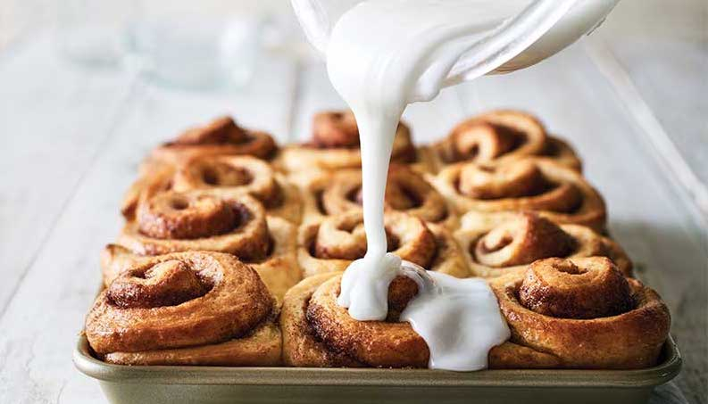

Original
These Cinnamon Rolls are perfect for your treats, presents, or special occations! These are Made from will be shipped to you on ice to preserve freshness. They can be eaten immediately or frozen for a special occasion.
Ingredients
• 1 cup warm milk
• 2 1/4 teaspoons 1 packet yeast
• 1/2 cup granulated sugar
Nutritional Facts
Cal: 300 kcal / Fat: 21g
Cinamin Original Roll
Cardbord Box with Window, 14.4 oz
How many?
12
3
4
Choose your glazing
nonesugar milk
vanila milk
double chocolate